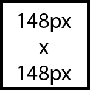

Rapidly flashing lights or strobe-like effects in video, graphics or animation can cause photo-epileptic seizures in users with photosensitive epilepsy. Also known as convulsions, these are a sudden, uncontrolled electrical disturbance in the brain that can cause physical harm.
Flashing lights can trigger a seizure if:

Because users may magnify the page and so enlarge the flashing area, it’s safest to limit the flashing of any size content to no more than three flashes in any 1-second period (Success Criterion 2.3.2: Three Flashes, Level AAA).
If you can’t edit the flashing source, don’t use it.
Allowing users to turn off the flashing content is not a viable option as the seizure could occur before the user has a chance to act.